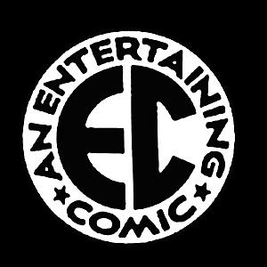

EC Comics
Entertaining Comics, more commonly known as EC Comics, was an American publisher of comic books, which specialized in horror fiction, crime fiction, satire, military fiction, dark fantasy, and science fiction from the 1940s through the mid-1950s, notably the Tales from the Crypt series. Initially, EC was owned by Maxwell Gaines and specialized in educational and child-oriented stories. After Max Gaines' death in a boating accident in 1947, his son William Gaines took over the company and began to print more mature stories, delving into genres of horror, war, fantasy, science-fiction, adventure, and others.
Noted for their high quality and shock endings, these stories were also unique in their socially conscious, progressive themes (including racial equality, anti-war advocacy, nuclear disarmament, and environmentalism) that anticipated the Civil Rights movement and dawn of 1960s counterculture.
In 1954–55, censorship pressures prompted it to concentrate on the humor magazine Mad, leading to the company's greatest and most enduring success. By 1956, the company ceased publishing all of its comic lines besides Mad.
Titles
Aces High (1955)
Animal Fables (1946)
Animated Comics (1947)
Blackstone (1947)
Confessions Illustrated (1956)
Crime Illustrated (1955)
Crime Patrol (1948)
Crime SuspenStories (1950)
Dandy Comics (1947)
Extra! (1955)
Fat and Slat (1947)
Frontline Combat (1951)
Gunfighter (1948)
Happy Houlihans (1947)
Haunt of Fear (1950)
Impact (1955)
Incredible Science Fiction (1955)
Land of the Lost (1946)
M.D.(1955)
Mad (1952)
Mad Classics (2005)
Mad Color Classics (2000)
Mad Follies (1963)
Mad Kids (2005)
Mad Special (1970)
Mad Super Special (1973)
Mad XL (2000)
Modern Love (1949)
Moon Girl (1947)
More Trash from Mad (1958)
Panic February–March (1954)
Picture Stories from American History (1945)
Picture Stories from Science (1947)
Picture Stories from the Bible (1944)
Piracy (1954)
Psychoanalysis (1955)
Saddle Justice (1948)
Shock Illustrated (1955)
Shock SuspenStories (1952)
Terror Illustrated (1955)
The Crypt of Terror (195)
Tales from the Crypt (1950)
The Haunt of Fear (1950)
The Vault of Horror (1950)
Three Dimensional E.C. Classics (1954)
Tiny Tot Comics (1946)
Two-Fisted Tales (1950)
Valor (1955)
War Against Crime! (1948)
Weird Fantasy (1950)
Weird Science (1950)
Weird Science-Fantasy (1954)
Worst from Mad (1958)